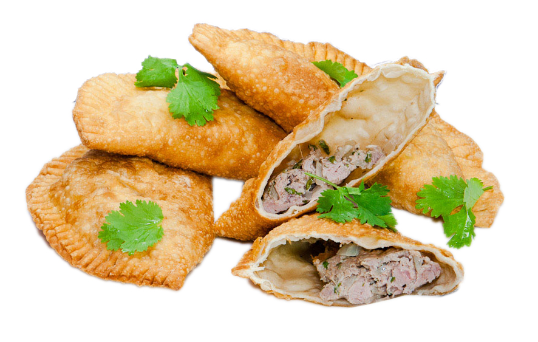

Chebureki Recipe
Back to Home

Description:
Chebureki are popular deep-fried pastries from Turkic and Eastern European
cuisines, filled with juicy, seasoned ground meat—usually beef or
lamb—mixed with onions and spices. They’re crispy on the outside and
tender inside, making them a delicious, savory street food or snack.
Ingredients:
- Flour
- Water
- Salt
- Ground meat (beef, lamb, or mix)
- Garlic
- Onion
- Oil (for frying)
- Salt & pepper
Steps:
- Make dough with flour, water, and salt.
- Mix ground meat, chopped onion, and seasonings.
- Roll dough, cut circles, fill, and fold into half-moons.
- Seal edges tightly.
- Deep-fry until golden and crispy.